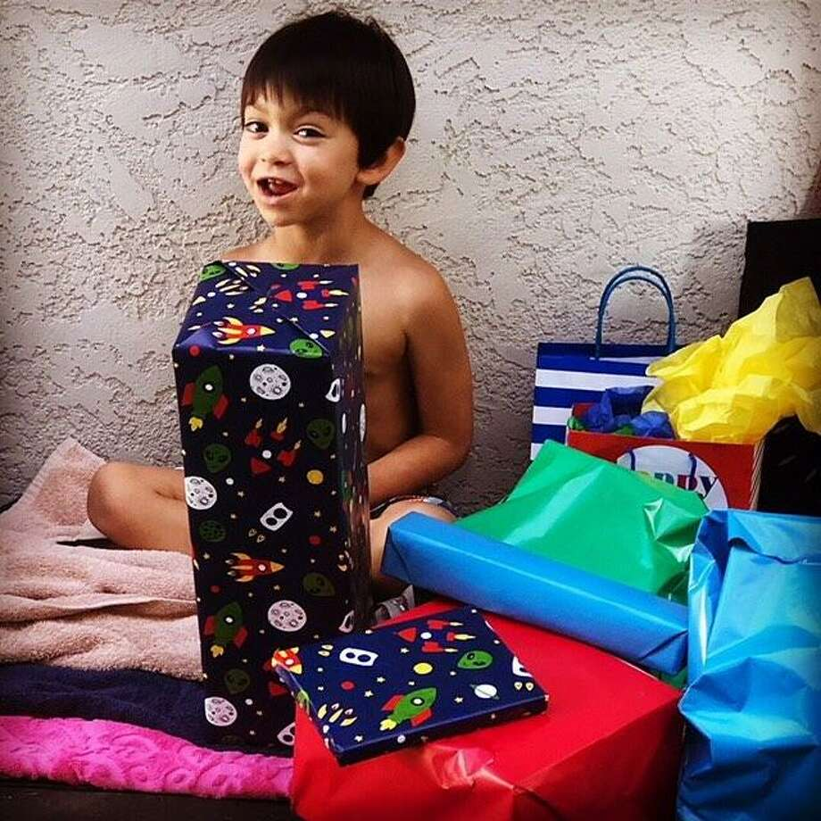

모데스토 집에서 납치된 6세 소년에게 황색 경보 발령
-

Modesto의 Jayce Cosso(6세)에게 황색 경보가 발령되었습니다.
사진 : / 모데스토 경찰Modesto의 Jayce Cosso(6세)에게 황색 경보가 발령되었습니다.

Modesto의 Jayce Cosso(6세)에게 황색 경보가 발령되었습니다.
Modesto의 Jayce Cosso(6세)에게 황색 경보가 발령되었습니다.
당국은 아버지에 의해 납치됐다고 경찰이 밝힌 6세 모데스토(Modesto) 소년에 대해 황색 경보를 발령했습니다.
경찰은 용의자 존 코소(41세)가 월요일 아침 자신의 집에서 소년 제이스 코소를 데려갔다고 밝혔다. 모데스토 경찰은 코소가 번호판 8BDY654를 장착한 2012년형 블랙 포드 퓨전을 운전하고 있다고 밝혔다.
소년의 어머니인 킴벌리 발렌테(Kimberly Valente)는 모데스토에서 KTXL과의 인터뷰에서 월요일 아침 일찍 포인세티아 드라이브에서 공익근로자로 가장한 낯선 사람이 그녀의 문을 두드렸고 그녀가 그에게 떠나라고 요청했을 때 코소의 차를 보았다고 말했습니다. . 그녀는 문을 잠갔지만 다른 사람이 도착해 침입해 그녀의 17세 아들과 그녀의 여동생에게 후추를 뿌렸다고 Valente는 텔레비전 방송국에 말했습니다.
Valente는 Jayce를 붙잡고 차로 달려가 문을 잠갔지만 Cossa와 다른 남자와 그의 큰 아들이 침입하여 Jayce를 데려갔습니다. 납치에는 남성 3명과 여성 1명이 연루된 것으로 알려졌다.
Cossa는 ???Om,???라고 적힌 문신을 포함하여 얼굴 문신을 한 것으로 알려졌습니다. KTXL에 따르면 그의 이마에.
이들의 행방에 대한 정보가 있는 경우 209-521-4636 또는 209-552-2470으로 Crime Stoppers에 전화하세요.
Jill Tucker는 샌프란시스코 크로니클의 전속 작가입니다. 이메일: jtucker@sfchronicle.com 트위터: @jilltucker